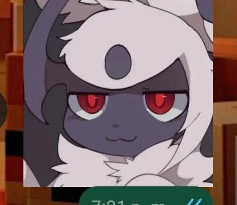

Sylveon x Umbreon
Tipo: Fada/Noturno (Ship confirmado)
— "eu quero comer você no meio da semana que vem." — "Não tá jogando limpo?
Conheça os ships mais populares de Pokémon! e também uns piores do que o outro.
⚠️ IHRÁAAAA!!! Aviso: Tirem as crianças da sala! Esse artigo contém conteúdo não recomendado para menores de 18 anos.
Tipo: Fada/Noturno (Ship confirmado)
— "eu quero comer você no meio da semana que vem." — "Não tá jogando limpo?
Tipo: Eletricidade/Normal (Ship não confirmado)
Orientação: Gay/Homossexual
Um ship conhecido por duas coisas: fofura, e... casamento?
Tipo: Psíquico/Lutador (Ship confirmado)
Orientação: Bissexual/Pansexual
Um dos ships mais conhecidos entre as evoluções da Kirlia.
Tipo: Água (Ship confirmado)
Orientação: Hetero
Não quero falar sobre esse ship, mas tá aqui.